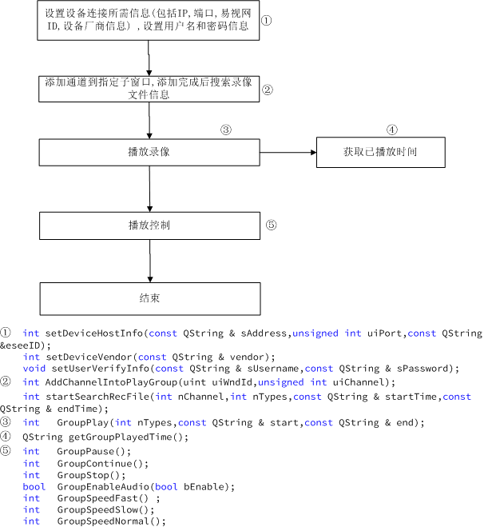
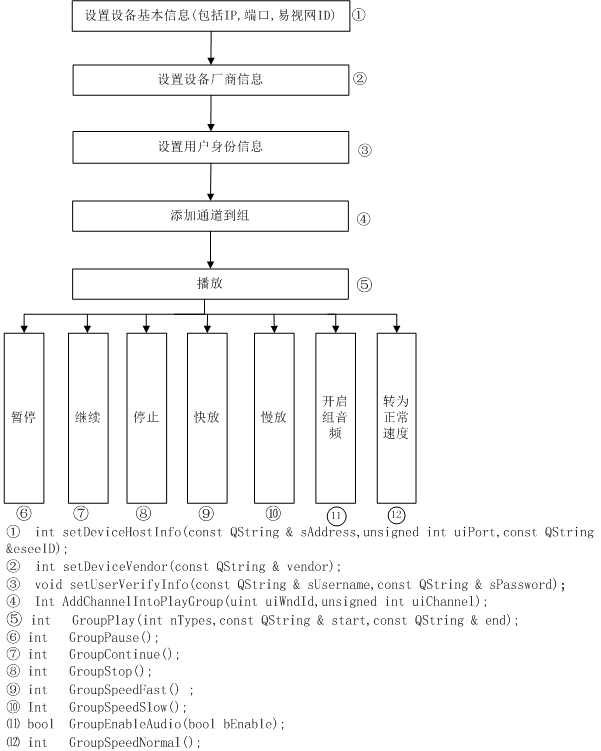

编辑人：姜晟
编辑日期：2013.12.27
插件简介：
//插件名称：Bubble协议回放插件
//插件功能：实现回放功能
接口说明：
//简述：设置设备连接信息
// 输入参数:
// sAddress: IP地址,如”192.168.2.134”形式
// uiPort: 端口
// eseeID: 易视网ID
// 返回值:
// 0: 设置成功
// 1: IP地址设置失败或者端口不合法
int setDeviceHostInfo(const QString & sAddress,unsigned int uiPort,const QString &eseeID);
//简述：页面设置设备的Vendor类型
//输入参数:
// vendor: 设备类型, 有JUAN DVR, JUAN IPC, ONVIF等
//返回值：
// 1：vendor为空设置失败
// 0：设置成功
int setDeviceVendor(const QString & vendor);
//简述：添加通道到指定窗口
//输入参数:
// uiWndId: 窗口索引, 从0开始,到3为止
// uiChannel: 指定通道Id
//返回值：
// -1：指定的窗口索引大于4或者是指定的通道号>32
// 0 ： 添加成功
// 1 : 添加失败
// 2 : 实例为NULL时
int AddChannelIntoPlayGroup(uint uiWndId, int uiChannelID);
//输入参数:
// uiWndId: 窗口索引, 从0开始,到3为止
//返回值：
// 窗口对应通道ID
int GetWndInfo(int uiWndId );
//简介：设置用户身份信息
//输入参数：
// sUsername ：用户名
// sPassword : 密码
void setUserVerifyInfo(const QString & sUsername,const QString & sPassword);
//简介：开始搜索录像文件信息
//输入参数：
// nChannel：通道号 (通道号按位算，例如请求 0，1，2，3通道，输入的nChannel 值为15（1111）)
// nTypes: 录像类型 ,定时（1），运动（2），感应器（4），手动（8）
// startTime: 指定的开始时间,格式为: yyyy-MM-dd hh:mm:ss
// endTime : 指定的结束时间,格式为: yyyy-MM-dd hh:mm:ss
//返回值：
// -1 : 之前实例创建失败或者开始时间和结束时间为空
// 0 : 组件中 的startSearchRecFile函数调用成功并且子线程有结果返回
// 1 : 组件中 的startSearchRecFile函数调用失败, 或者子线程无结果返回
//1:搜索失败
//0：搜索失败
int startSearchRecFile(int nChannel,int nTypes,const QString & startTime,const QString & endTime);
//简介：返回当前已播放时间
//返回值：
// QString：返回当前已播放时间, 格式为: yyyy-MM-dd hh:mm:ss
QString GetNowPlayedTime();
//简介：播放视频
//输入参数：
// nTypes：录像类型
// start： 开始时间, 格式为: yyyy-MM-dd hh:mm:ss
// end ： 结束时间, 格式为: yyyy-MM-dd hh:mm:ss
//返回值：
// -2: 连接的实例创建失败
// -1: 播放的实例创建失败或者开始时间和结束时间为空
// 0： 组件中GroupPlay函数返回调用成功
// 1： 组件中GroupPlay函数返回连接中断
// 2: 组件中GroupPlay函数返回参数错误
// 3: 函数注册失败
int GroupPlay(int nTypes,const QString & start,const QString & end);
//简介：播放视频暂停
//输入参数：
//返回值：
// -1: 播放的实例创建失败
// 0： 组件中GroupPause函数返回调用成功
int GroupPause();
//简介：播放视频继续
//返回值：
// -1: 播放的实例创建失败
// 0： 组件中GroupContinue()函数返回调用成功
int GroupContinue();
//简介：播放视频终止
//返回值：
// -1: 播放的实例创建失败
// 0： 组件中GroupStop()函数返回调用成功
// 1: 组件中实例未创建或者创建失败
int GroupStop();
//简介：播放的视频开启音频
//输入参数:
// bEnable: 开启或者关闭
//返回值：
0：调用成功
1：调用失败
int AudioEnabled (bool bEnable);
//简介：设置音量大小
//输入参数：
//uiPersent: 音量大小，范围从0到100，0为静音，默认为最大音量
//返回值：
// -1: 音量设置失败
// 0： 音量设置成功
int SetVolume (const unsigned int &uiPersent);
//简介：快速播放视频
//返回值：
// -1: 播放的实例创建失败
// 0： 组件中GroupSpeedFast函数返回调用成功
int GroupSpeedFast() ;
//简介：慢速播放视频
//返回值：
// -1: 播放的实例创建失败
// 0： 组件中GroupSpeedSlow函数返回调用成功
int GroupSpeedSlow();
//简介：正常速度播放视频
//返回值：
// -1: 播放的实例创建失败
// 0： 组件中GroupSpeedNormal函数返回调用成功
int GroupSpeedNormal();
//简介：获取当前的状态
//返回值：
STATUS_PLAY, 0
STATUS_PAUSE, 1
STATUS_STOP, 2
STATUS_SLOW, 3
STATUS_FAST, 4
STATUS_NORMAL, 5
STATUS_CONTINUE 6
int GetCurrentState();
=========截屏=========
返回值参数：imageName,path
QVariantMap ScreenShot();
插件抛出的事件：
@1
事件名称：CurrentStateChange
抛出条件：连接状态发生改变
事件参数:
CurrentState ：转变后的状态号
CurrentState取值：
0 STATUS_CONNECTED,
1 STATUS_CONNECTING,
2 STATUS_DISCONNECTED,
3 STATUS_DISCONNECTING,
@2
事件名称：RecFileInfo
抛出条件：调用int startSearchRecFile(int nChannel,int nTypes,const QString & startTime,const QString & endTime);
事件参数:
channel： 通道号
types： 录像类型
filename： 文件名称
start: 开始时间
end: 结束时间
index: 文件编号
types取值：
1 表示定时录像,
2 表示移动侦测录像,
4 表示报警录像,
8 表示手动录像,
start和end取值:
形式为“yyyy-MM-dd hh:mm:ss”
@3
事件名称：recFileSearchFinished
抛出条件：调用int startSearchRecFile(int nChannel,int nTypes,const QString & startTime,const QString & endTime);
事件参数：
total：搜索到的总条数
页面调用接口时序：
//@1搜索流程 ：

//@2播放流程 :
